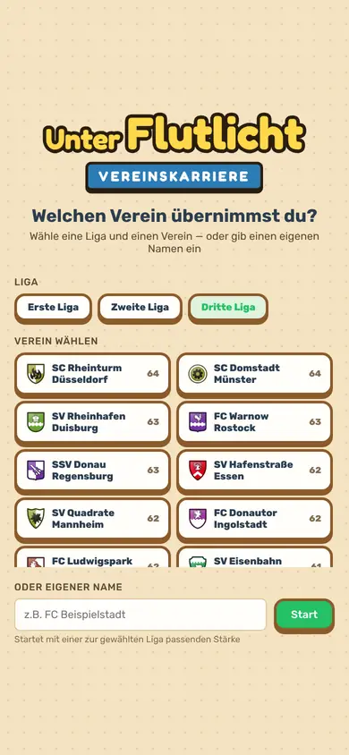
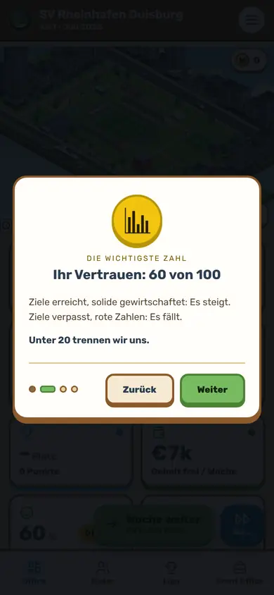
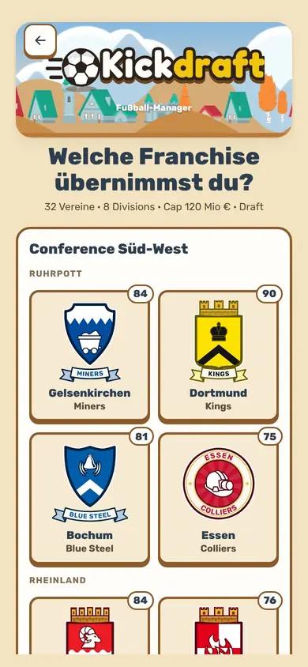
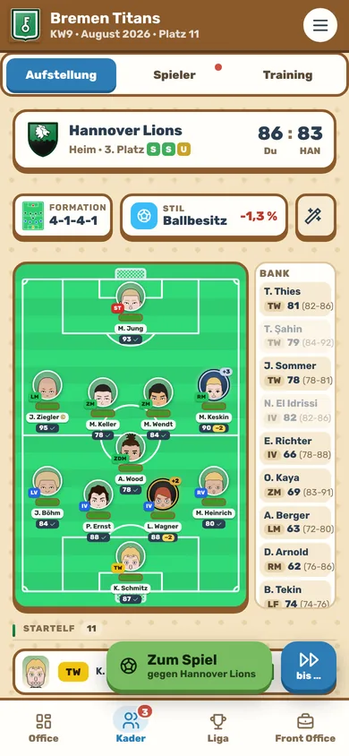
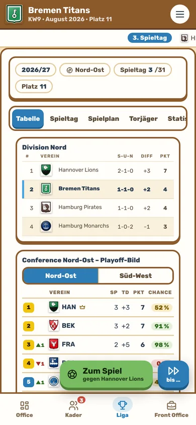
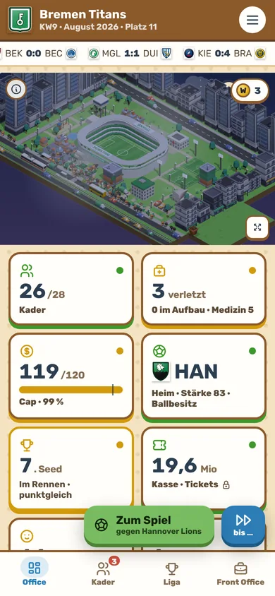

Unter Flutlicht
Ein Fußball-Manager. Zwei Spielarten.
Führ deinen Verein von der Dritten Liga nach oben – oder bau in Kickdraft deine Franchise über Draft, Salary Cap und Playoffs. Probier beides direkt hier im Browser aus.
Kostenlos · ohne Konto · ohne Werbung im Browser · am Handy und am PC

Spielart 1
Vereinskarriere
Der klassische Manager mit Auf- und Abstieg. Übernimm einen Verein aus der Ersten, Zweiten oder Dritten Liga, verhandle Verträge, bau Stadion und Akademie aus und kämpf dich hoch – bis in den Europapokal.
Auf- und Abstieg
Vom Abstiegskampf bis zur Meisterschaft – jede Saison zählt.
Spieltag im Ticker
Derbys, Pokal und Finale mit eigener Stimmung, Zurufe von der Seitenlinie.
Ziele und Vertrauen
Tabelle, Finanzen, Ausbau – wer die Ziele verfehlt, fliegt.

Demo: zwei Saisons
Spielart 2
Kickdraft
Fußball mit den Regeln der großen US-Ligen: 32 Franchises, kein Abstieg, ein harter Salary Cap, Talente nur über den Draft und am Ende Playoffs um die Meisterschaft.
Franchises, kein Abstieg
Zwei Conferences, acht Divisions. Jeder Verein kann jedes Jahr oben angreifen.
Harter Salary Cap
Verträge, Handgeld und Dead Cap. Wer zu viel ausgibt, zahlt Jahre später dafür.
Draft statt Nachwuchs
Die Schwächsten wählen zuerst, Picks lassen sich tauschen.
Playoffs
Division-Sieger und Wildcards spielen um den Titel.




Demo: eine Saison
Am Handy oder am PC
Im Browser
Beide Spielarten als Demo, am Handy und am PC. Der Spielstand bleibt in deinem Browser.
Android-App
Das ganze Spiel, kostenlos bei Google Play. Läuft auch ohne Internet.
PC-Version
Für Windows mit eigener PC-Bedienung und Streamer-Modus – zuerst bei itch.io, später bei Steam.